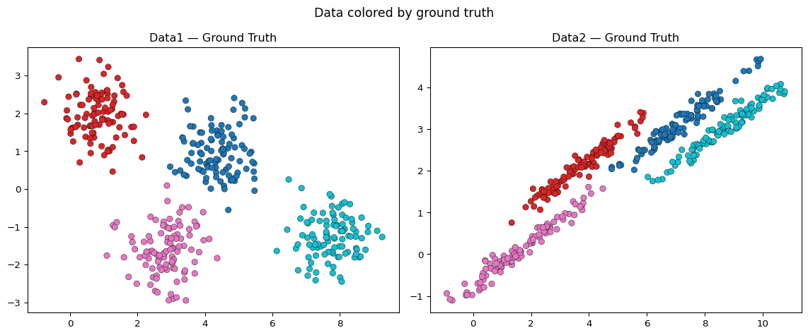

Lab on Gaussian Mixture Models (GMM) and Expectation Maximization (EM) technique
- In R, the
mclustpackage is famous for building GMMs. - An excellent documentation of
mclustcan be found here. - In Python, we can use
sklearn.mixturemodule in which there is theGaussianMixture()class. - Note that the
GaussianMixture()class does not provide the same automatic determination of the number of components like in R’smclustpackage. But you can do it manually or use the classAutoGMMCluster()from thegraspologic.cluster.autogmmmodule. - Description of
AutoGMMCluster()from here: This method expands upon the existing Sklearn framework by allowing the user to automatically estimate the best hyperparameters for a Gaussian mixture model. In particular, the idealn_components_is estimated byAutoGMMfrom a range of possible values given by the user.AutoGMMalso sweeps over multiple covariance structures.
Note
In the first part of this lab you will learn how to fit a Gaussian Mixture Model (GMM) using Python. You will Compare \(k\)-means and GMM on artificial data (2-D data).
In the second part (extra work) of this lab you will build an algorithm from scratch. Your algorithm must fit a GMM model using the Expectation-Maximization (EM) technique on any multi dimensional dataset.
Expectation-Maximization (EM)
GMM vs \(k\)-means
In this section, we will use two artificial (simulated) datasets in which we know the ground truth (true labels) in order to compare the performances of \(k\)-means and GMM. To fit a GMM using the EM technique in Python, we use sklearn.mixture.GaussianMixture.
1. Download and import Data1 🔢 and Data2 🔢. Plot both datasets on the same window, coloring the observations with respect to the ground truth, like in the figure below.
2. Apply \(k\)-means on both datasets with 4 clusters. Plot both datasets on the same window and color the observations with respect to the \(k\)-means results. Interpret the results.
Tip
One way to think about the \(k\)-means model is that it places a circle (or, in higher dimensions, a hyper-sphere) at the center of each cluster, with a radius defined by the most distant point in the cluster. This radius acts as a hard cutoff for cluster assignment: any point outside this circle is not considered a member of the cluster. You can try to visualize these circles on your plots using matplotlib.patches.Circle.
3. Now fit a GMM model on both datasets. In Python, use GaussianMixture from sklearn.mixture. Set n_components=4 to match the known number of clusters. Visualize the results on both datasets and interpret them.
In the following questions, explore GaussianMixture and what it offers. Apply its functions on Data2.
Tip
sklearn.mixture.GaussianMixture fits a Gaussian Mixture Model via the EM algorithm. It supports several covariance structures (full, tied, diag, spherical), automatic convergence detection, and provides access to fitted parameters (\(\mu_k\), \(\Sigma_k\), \(\pi_k\)), posterior probabilities, log-likelihood, and BIC/AIC scores. It is the Python equivalent of R’s mclust package.
4. Print a summary of the GMM model fitted on Data2. Inspect and explain the fitted parameters: means (means_), covariances (covariances_), and mixing weights (weights_).
5. Visualize the GMM results on Data2. Produce two plots:
- Classification plot: color each point by its most likely cluster (hard assignment via
predict()). - Uncertainty plot: color each point by its assignment uncertainty, i.e. \(1 - \max_k r(z_{nk})\), where \(r(z_{nk})\) are the posterior probabilities from
predict_proba().
6. GaussianMixture can compute BIC and AIC to help select the number of mixture components. Fit GMMs with \(k\) ranging from 1 to 10 on Data2 and plot the BIC and AIC curves. Identify the optimal \(k\).
bic_scores = []
aic_scores = []
k_range = range(1, 11)
for k in k_range:
gmm_k = GaussianMixture(n_components=k, n_init=5, random_state=42)
gmm_k.fit(X2)
bic_scores.append(gmm_k.bic(X2))
aic_scores.append(gmm_k.aic(X2))
plt.figure(figsize=(8, 4))
plt.plot(k_range, bic_scores, marker="o", label="BIC")
plt.plot(k_range, aic_scores, marker="s", linestyle="--", label="AIC")
plt.xlabel("Number of components $k$")
plt.ylabel("Score (lower is better)")
plt.title("BIC and AIC vs. Number of Gaussian Components (Data2)")
plt.legend()
plt.xticks(list(k_range))
plt.tight_layout()
plt.show()
Tip
In sklearn, lower BIC/AIC is better — this is the opposite sign convention from R’s mclust, where higher BIC is better. The formula used is:
\[\text{BIC} \approx -2\,\ell(X|\hat{\theta}) + \nu \log(n)\]
We select the model that minimises BIC.
The covariance type (full, tied, diag, spherical) plays the same role as the parameterisation of \(\Sigma_k\) in mclust. You can loop over covariance types to find the best model structure:
for cov_type in ["full", "tied", "diag", "spherical"]:
gmm_k = GaussianMixture(n_components=k, covariance_type=cov_type, ...)7. Though GMM is often categorized as a clustering algorithm, fundamentally it is a density estimation algorithm — its output is a generative probabilistic model describing the distribution of the data. Estimate and visualize the density of Data2 using your fitted GMM. Produce both a contour plot and a 3D surface plot of the estimated bivariate density. The code is given below:
from mpl_toolkits.mplot3d import Axes3D
from scipy.stats import multivariate_normal
# Build a grid
x_min, x_max = X2[:, 0].min() - 1, X2[:, 0].max() + 1
y_min, y_max = X2[:, 1].min() - 1, X2[:, 1].max() + 1
xx, yy = np.meshgrid(np.linspace(x_min, x_max, 200),
np.linspace(y_min, y_max, 200))
grid = np.c_[xx.ravel(), yy.ravel()]
# Evaluate log-density on the grid
log_density = gmm2.score_samples(grid)
density = np.exp(log_density).reshape(xx.shape)
fig = plt.figure(figsize=(14, 5))
# Contour plot
ax1 = fig.add_subplot(1, 2, 1)
ax1.contourf(xx, yy, density, levels=20, cmap="viridis")
ax1.scatter(X2[:, 0], X2[:, 1], s=10, color="white", alpha=0.4)
ax1.set_title("GMM Density Estimate — Contour (Data2)")
# 3D surface
ax2 = fig.add_subplot(1, 2, 2, projection="3d")
ax2.plot_surface(xx, yy, density, cmap="viridis", edgecolor="none", alpha=0.85)
ax2.set_title("GMM Density Estimate — 3D Surface (Data2)")
ax2.set_xlabel("X1")
ax2.set_ylabel("X2")
ax2.set_zlabel("Density")
plt.tight_layout()
plt.show()Extra work: EM from Scratch
In this second part you will build a GMM from scratch using the EM algorithm, without relying on sklearn.
2.1 Generate a two-dimensional dataset from a \(k\)-component Gaussian mixture density with different means and different covariance matrices. Choose the mixing proportions \(\{\pi_1, \ldots, \pi_k\}\) freely.
2.2 Implement the EM algorithm to fit a GMM on your generated data:
- Initialize mixing proportions with equal weights and covariance matrices as identity matrices.
- Initialize means randomly (choose \(k\) freely).
- At each iteration of the EM loop, store the observed-data log-likelihood.
- At convergence, plot the log-likelihood curve.
2.3 Create a function that selects the number of mixture components by computing BIC for \(k\) ranging from 1 to 10.
2.4 Compare the results of your scratch implementation with the ground truth in terms of:
- The chosen number of mixture components (does BIC recover the true \(k\)?).
- The error rate: assign each point to its most likely component and compare with the true labels.
2.5 Apply your EM implementation on the Iris 🔢 dataset.
Tip
To visualize results on the Iris dataset, use PCA projection and color by clustering results — as done above. For a richer dimensionality reduction adapted to mixture models, sklearn also provides LinearDiscriminantAnalysis as an alternative to PCA when class labels are available.
◼